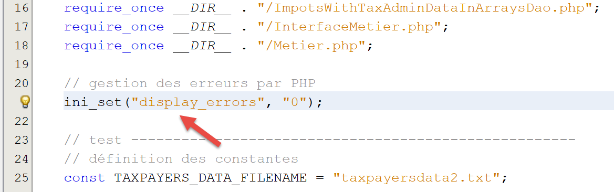
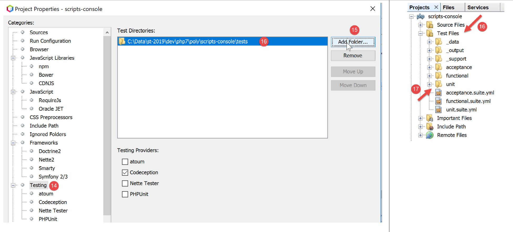
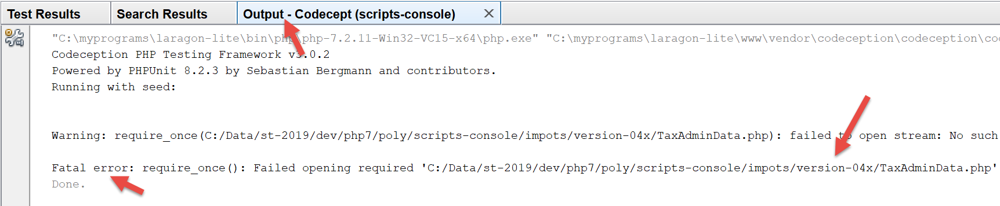

11. Exercício prático – versão 4
A aplicação de cálculo de impostos irá implementar a seguinte estrutura em camadas:

Vamos retomar os elementos da versão 3 do parágrafo «ligação», modificando-os para os adaptar à nova arquitetura da aplicação. Às vezes, chama-se a isto «refatoração». Partimos do princípio de que os dados necessários à aplicação se encontram em ficheiros de texto. É a camada [Dao] que se encarregará das trocas de dados com esses ficheiros.
11.1. Estrutura hierárquica dos scripts

11.2. Objetos trocados entre camadas
Vamos manter alguns objetos da versão 3. Apresentamo-los aqui a título de recordação.
A exceção [ExceptionImpots] é a exceção que a camada [Dao] lançará quando encontrar um problema, quer com o acesso aos dados, quer com a natureza dos dados (dados incorretos).
<?php
// espaço de nomes
namespace Application;
class ExceptionImpots extends \RuntimeException {
public function __construct(string $message, int $code=0) {
parent::__construct($message, $code);
}
}
A classe [Utilitaires] reúne métodos úteis para a gestão de ficheiros de texto (neste caso, um único método):
<?php
// espaço de nomes
namespace Application;
// uma classe de funções utilitárias
abstract class Utilitaires {
public static function cutNewLinechar(string $ligne): string {
// elimina-se o marcador de fim de linha de $ligne, caso exista
$longueur = strlen($ligne); // comprimento da linha
while (substr($ligne, $longueur - 1, 1) == "\n" or substr($ligne, $longueur - 1, 1) == "\r") {
$ligne = substr($ligne, 0, $longueur - 1);
$longueur--;
}
// fim - a linha é devolvida
return($ligne);
}
}
A classe [TaxAdminData] é a classe que encapsula os dados da administração fiscal:
<?php
namespace Application;
class TaxAdminData {
// faixas de imposto
private $limites;
private $coeffR;
private $coeffN;
// constantes de cálculo do imposto
private $plafondQfDemiPart;
private $plafondRevenusCelibatairePourReduction;
private $plafondRevenusCouplePourReduction;
private $valeurReducDemiPart;
private $plafondDecoteCelibataire;
private $plafondDecoteCouple;
private $plafondImpotCouplePourDecote;
private $plafondImpotCelibatairePourDecote;
private $abattementDixPourcentMax;
private $abattementDixPourcentMin;
// inicialização
public function setFromJsonFile(string $taxAdminDataFilename): TaxAdminData {
// recuperar o conteúdo do ficheiro de dados fiscais
$fileContents = \file_get_contents($taxAdminDataFilename);
…
// retorna o objeto
return $this;
}
private function check($value): \stdClass {
…
return $result;
}
// toString
public function __toString() {
// cadeia JSON do objeto
return \json_encode(\get_object_vars($this), JSON_UNESCAPED_UNICODE);
}
// getters e setters
public function getLimites() {
return $this->limites;
}
…
public function setLimites($limites) {
$this->limites = $limites;
return $this;
}
…
}
Adicionamos uma nova classe, [TaxPayerData], que encapsula os dados gravados no ficheiro de resultados:
<?php
// espaço de nomes
namespace Application;
// a classe de dados
class TaxPayerData {
// dados necessários para o cálculo do imposto do contribuinte
private $marié;
private $enfants;
private $salaire;
// resultados do cálculo do imposto
private $montant;
private $surcôte;
private $décôte;
private $réduction;
private $taux;
// setter
public function setFromParameters(string $marié, int $nbEnfants, int $salaireAnnuel) : TaxPayerData{
// dados do contribuinte necessários para o cálculo do imposto
$this->marié = $marié;
$this->enfants = $nbEnfants;
$this->salaire = $salaireAnnuel;
// retorna o objeto inicializado
return $this;
}
// getters e setters
public function getMarié() {
return $this->marié;
}
…
public function setMarié($marié) {
$this->marié = $marié;
return $this;
}
…
// toString
public function __toString() {
// cadeia JSON do objeto
return \json_encode(\get_object_vars($this), JSON_UNESCAPED_UNICODE);
}
}
Nota: utilize a geração automática de código para gerar o construtor, os getters e os setters (ver parágrafo com o link). Repare que os setters são «fluentes».
11.3. A camada [dao]
Estamos aqui a analisar a camada [1] da nossa aplicação:

11.3.1. A interface [InterfaceDao]
A interface da camada [dao] será a seguinte: [InterfaceDao.php]:
<?php
// espaço de nomes
namespace Application;
interface InterfaceDao {
// leitura dos dados dos contribuintes
public function getTaxPayersData(string $taxPayersFilename, string $errorsFilename): array;
// leitura dos dados da administração fiscal (faixas de imposto)
public function getTaxAdminData(): TaxAdminData;
// registo dos resultados
public function saveResults(string $resultsFilename, array $taxPayersData): void;
}
Comentários
- O caderno de encargos é o seguinte:
- os dados dos contribuintes encontram-se num ficheiro de texto;
- os resultados do cálculo dos impostos são gravados num ficheiro de texto;
- os eventuais erros são registados num ficheiro de texto;
- não se sabe em que formato os dados da administração fiscal estão disponíveis. Para cada novo formato, a interface [InterfaceDao] deverá ser implementada por uma nova classe;
- os métodos da interface que encontrem um erro irrecuperável ao aceder aos dados devem lançar uma exceção do tipo [ExceptionImpots];
- linha 9: o método que permite obter os dados do contribuinte [statut marital, nombre d’enfants, salaire annuel];
- o primeiro parâmetro é o nome do ficheiro de texto onde se encontram esses dados;
- o segundo parâmetro é o nome do ficheiro de texto no qual se devem registar os eventuais erros encontrados;
- linha 12: o método que permite obter os dados da administração fiscal. Aqui não lhe é passado nenhum parâmetro, pois não se sabe como estão armazenados;
- linha 15: o método que permite registar os resultados do cálculo do imposto num ficheiro de texto cujo nome é passado como parâmetro;
Ao escrever a interface [InterfaceDao], sabemos que haverá diferentes formas de escrever o método [getTaxAdminData], dependendo da forma como os dados da administração fiscal forem armazenados. A interface [InterfaceDao] será, portanto, implementada por diferentes classes, cada uma responsável por um tipo específico de armazenamento desses dados (tabelas, ficheiros de texto, base de dados, serviço web). Estas classes derivadas terão, no entanto, um código comum, o da implementação dos métodos [getTaxPayersData, saveResults]. Sabe-se que este caso de utilização pode ser implementado de duas formas (ver parágrafo com link):
- cria-se uma classe abstrata C que agrupa o código comum às classes derivadas. A classe C implementa a interface I, mas alguns métodos que devem ser declarados nas classes derivadas são, na classe C, declarados como abstratos e, por isso, a própria classe C é abstrata. Em seguida, criam-se as classes C1 e C2, derivadas de C, que implementam, cada uma à sua maneira, os métodos não definidos (abstratos) da sua classe pai C;
- cria-se um traço T quase idêntico à classe abstrata C da solução anterior. Este traço não implementa a interface I, uma vez que, do ponto de vista sintático, não o pode fazer. Em seguida, criam-se as classes C1 e C2, que implementam a interface I e utilizam o traço T. Estas classes só têm de implementar os métodos da interface I que não foram implementados pelo traço T que importam;
Para o exemplo, vamos utilizar aqui um trait [TraitDao].
11.3.2. O trait [TraitDao]
O código do trait [TraitDao] é o seguinte: [TraitDao.php]:
<?php
// espaço de nomes
namespace Application;
trait TraitDao {
// leitura dos dados dos contribuintes
public function getTaxPayersData(string $taxPayersFilename, string $errorsFilename): array {
// tabela de dados dos contribuintes
$taxPayersData = [];
// tabela de erros
$errors = [];
// podem ocorrer bastantes erros sempre que se gerem ficheiros
try {
// leitura dos dados do utilizador
// cada linha tem o seguinte formato: estado civil, número de filhos, salário anual
$taxPayersFile = fopen($taxPayersFilename, "r");
if (!$taxPayersFile) {
throw new ExceptionImpots("Impossible d'ouvrir en lecture les déclarations des contribuables [$taxPayersFilename]", 12);
}
// processa-se a linha atual do ficheiro de dados do utilizador
// que tem o formato: estado civil, número de filhos, salário anual
$num = 1; // n.º da linha atual
$nbErreurs = 0; // número de erros encontrados
while ($ligne = fgets($taxPayersFile, 100)) {
// ignora-se as linhas vazias
$ligne = trim($ligne);
if (strlen($ligne) == 0) {
// linha seguinte
$num++;
// repetir o ciclo
continue;
}
// remove-se a eventual marca de fim de linha
$ligne = Utilitaires::cutNewLineChar($ligne);
// recuperam-se os 3 campos «casado:filhos:salário» que formam $ligne
list($marié, $enfants, $salaire) = explode(",", $ligne);
// verifica-se
// o estado civil deve ser «sim» ou «não»
$marié = trim(strtolower($marié));
$erreur = ($marié !== "oui" and $marié !== "non");
if (!$erreur) {
// o número de filhos deve ser um número inteiro
$enfants = trim($enfants);
if (!preg_match("/^\d+$/", $enfants)) {
$erreur = TRUE;
} else {
$enfants = (int) $enfants;
}
}
if (!$erreur) {
// o salário é um número inteiro, sem cêntimos de euro
$salaire = trim($salaire);
if (!preg_match("/^\d+$/", $salaire)) {
$erreur = TRUE;
} else {
$salaire = (int) $salaire;
}
}
// erro?
if ($erreur) {
$errors[] = "la ligne [$num] du fichier [$taxPayersFilename] est erronée";
$nbErreurs++;
} else {
// as informações são guardadas
$taxPayersData[] = (new TaxPayerData())->setFromParameters($marié, $enfants, $salaire);
}
// linha seguinte
$num++;
}
// estamos no fim do ficheiro?
if (!feof($taxPayersFile)) {
// saiu-se do ciclo devido a um erro de leitura
throw new ExceptionImpots("Erreur lors de la lecture de la ligne n° [$num] du fichier [$taxPayersFilename]");
} else {
// saiu-se do ciclo ao chegar à marca de fim de ficheiro
// guardamos os erros num ficheiro de texto
$this->saveString($errorsFilename, implode("\n", $errors));
// resultado da função
return $taxPayersData;
}
} finally {
// fecha-se o ficheiro, caso esteja aberto
if ($taxPayersFile) {
fclose($taxPayersFile);
}
}
}
// registo dos resultados
public function saveResults(string $resultsFilename, array $taxPayersData): void {
// gravação da tabela [$taxPayersData] no ficheiro de texto [$resultsFileName]
// se o ficheiro de texto [$resultsFileName] não existir, é criado
$this->saveString($resultsFilename, implode("\n", $taxPayersData));
}
// registo dos resultados de uma tabela num ficheiro de texto
private function saveString(string $fileName, string $data): void {
// gravação da tabela [$data] no ficheiro de texto [$fileName]
// se o ficheiro de texto [$fileName] não existir, é criado
if (file_put_contents($fileName, $data) === FALSE) {
throw new ExceptionImpots("Erreur lors de l'enregistrement de données dans le fichier texte [$fileName]");
}
}
}
Comentários
- linha 6: definimos aqui um traço e não uma classe;
- linhas 9-89: o método [getTaxPayersData] implementa o método com o mesmo nome da interface [InterfaceDao]. Este método recupera, num ficheiro de texto denominado [$taxPayersFilename], os dados dos contribuintes [statut marital, nombre d’enfants, salaire annuel]. Apresenta esses dados sob a forma de uma tabela [$taxPayersData] composta por elementos do tipo [TaxPayerData] (linhas 67, 81);
- o método [getTaxPayersData] é muito semelhante ao método [AbstractBaseImpots::executeBatchImpots] descrito no parágrafo «ligação», com as seguintes diferenças:
- o método [getTaxPayersData] limita-se a recuperar os dados dos contribuintes. Não efetua qualquer cálculo de imposto. Nesse caso, essa função cabe à camada [métier];
- tal como fazia o método [executeBatchImpots], este método sinaliza os erros. Aqui, os erros são primeiro armazenados numa tabela [$errors] (linha 13), tabela essa que é gravada num ficheiro de texto no final do processamento (linha 79). Dependendo do caso, esta tabela pode estar vazia ou não;
- no caso de um erro irrecuperável, é lançada uma exceção do tipo [ExceptionImpots] (linhas 20, 75);
- linha 73: note-se o tratamento efetuado à saída do ciclo das linhas 26-71. Com efeito, a função [fgets] tem a desvantagem de definir o valor booleano FALSE tanto quando a leitura das linhas encontra o marcador de fim de ficheiro, como quando essa leitura não foi bem-sucedida devido a um erro. Para distinguir os dois casos, verifica-se se se chegou ao fim do ficheiro com a função [feof]. Se não se chegou ao fim do ficheiro, significa que ocorreu um erro e, nesse caso, lança-se uma exceção;
- linhas 83-88: a função [finally] é executada, independentemente de ter ocorrido ou não uma exceção durante o processamento do ficheiro;
- linha 85: se o ficheiro tiver sido aberto, então o «handle» [$taxPayersFile] do ficheiro tem o valor booleano TRUE; caso contrário, tem o valor FALSE;
- linhas 99-105: o método privado [saveString] utilizado na linha 79 para registar a tabela de erros num ficheiro de texto;
- linha 99: o método [saveString] recebe dois parâmetros:
- [string $filename], que é o nome do ficheiro de texto utilizado para gravar os dados;
- [string $data], que é a cadeia de caracteres a registar no ficheiro de texto. Esta cadeia será um conjunto de linhas terminadas pelo carácter de fim de linha \n;
- linha 102: a função PHP [file_puts_contents] grava uma cadeia de caracteres num ficheiro de texto. Esta função encarrega-se de abrir o ficheiro, escrever a cadeia de caracteres no mesmo e fechar o ficheiro. Devolve o valor booleano FALSE caso tenha ocorrido um erro;
- linha 103: se ocorrer um erro, é lançada uma exceção;
- linhas 92-96: implementação do método [saveResults] da interface [InterfaceDao]. Utiliza-se novamente o método privado [saveString]. Aqui, o segundo parâmetro de [saveString] é uma cadeia de caracteres construída a partir da tabela [$taxPayersData], cujos elementos são do tipo [TaxPayerData]. Podemos questionar-nos sobre qual será o resultado da operação:
implode("\n", $taxPayersData)
Definimos na classe [TaxPayerData] (parágrafo «ligação») o seguinte método [__toString]:
public function __toString() {
// cadeia JSON do objeto
return \json_encode(\get_object_vars($this), JSON_UNESCAPED_UNICODE);
}
A operação
implode("\n", $taxPayersData)
irá concatenar cada elemento da tabela [$taxPayersData], transformado numa cadeia de caracteres pelo seu método [__toString], com o caractere de fim de linha \n. Isto resultará numa cadeia de caracteres com o seguinte formato:
json1\njson2\n…
Conclusão
A função [TraitDao] implementou dois dos métodos da interface [InterfaceDao], [getTaxPayersData] e [saveResults]:
<?php
// espaço de nomes
namespace Application;
interface InterfaceDao {
// leitura dos dados dos contribuintes
public function getTaxPayersData(string $taxPayersFilename, string $errorsFilename): array;
// leitura dos dados da administração fiscal (faixas de imposto)
public function getTaxAdminData(): TaxAdminData;
// registo dos resultados
public function saveResults(string $resultsFilename, array $taxPayersData): void;
}
Resta-nos implementar o método [getTaxAdminData], que recupera os dados da administração fiscal.
11.3.3. A classe [ImpotsWithTaxAdminDataInJsonFile]
A classe [ImpotsWithTaxAdminDataInJsonFile] implementa a interface [InterfaceDao] da seguinte forma:
<?php
// espaço de nomes
namespace Application;
// definição de uma classe ImpotsWithDataInFile
class DaoImpotsWithTaxAdminDataInJsonFile implements InterfaceDao {
// utilização de uma característica
use TraitDao;
// o objeto do tipo TaxAdminData que contém os dados das faixas de imposto
private $taxAdminData;
// o construtor
public function __construct(string $taxAdminDataFilename) {
// pretende-se inicializar o atributo [$this->taxAdminData]
$this->taxAdminData = (new TaxAdminData())->setFromJsonFile($taxAdminDataFilename);
}
// retorna os dados que permitem o cálculo do imposto
public function getTaxAdminData(): TaxAdminData {
return $this->taxAdminData;
}
}
Comentários
- linha 7: a classe [ImpotsWithTaxAdminDataInJsonFile] implementa a interface [InterfaceDao];
- linha 9: a classe [ImpotsWithTaxAdminDataInJsonFile] utiliza o traço [traitDao], que, como se sabe, implementa os métodos [getTaxPayersData] e [saveResults] dainterface [InterfaceDao]. Assim, resta apenas à classe [ImpotsWithTaxAdminDataInJsonFile] implementar o método [getTaxAdminData], que recupera os dados da administração fiscal;
- linha 11: o atributo de tipo [TaxAdminData] que o método [getTaxAdminData] das linhas 20-22 devolve. Este atributo é inicializado pelo construtor das linhas 14-17;
Concluímos a camada [dao] da nossa aplicação: temos uma classe que implementa na íntegra a interface [InterfaceDao] que nos impusemos. Podemos agora passar para a camada [métier].
11.4. A camada [métier]
Vamos agora implementar a camada [2] da nossa arquitetura:

11.4.1. A interface [InterfaceMétier]
A interface da camada [métier] será a seguinte:
<?php
// espaço de nomes
namespace Application;
interface InterfaceMetier {
// cálculo dos impostos de um contribuinte
public function calculerImpot(string $marié, int $enfants, int $salaire): array;
// cálculo dos impostos em modo batch
public function executeBatchImpots(string $taxPayersFileName, string $resultsFileName, string $errorsFileName): void;
}
Comentários
- linha 9: a interface [InterfaceMétier] é capaz de calcular o montante do imposto de um contribuinte particular, desde que lhe sejam fornecidas as seguintes informações: estado civil, número de filhos, salário anual. O método [calculerImpot] não utiliza a camada [dao], pelo que não lança exceções;
- linha 9: a interface [InterfaceMétier] também pode calcular o montante do imposto de um conjunto de contribuintes cujos dados estão reunidos no ficheiro de texto denominado [$taxPayersFileName]. Ela coloca os resultados num ficheiro de texto denominado [$resultsFileName]. O método [executeBatchImpots] deve recorrer à camada [dao], que se encarrega dos acessos ao sistema de ficheiros. Podem então ocorrer exceções provenientes da camada [dao] que o método [executeBatchImpots] não irá interceptar: este permitirá que elas sejam encaminhadas para o script principal. Os erros não fatais são registados no ficheiro de texto denominado [$errorsFileName];
- linha 9: o método [calculerImpot] é um método puramente [métier]. Não se preocupa com a origem dos dados que utiliza;
- linha 12: o método [executeBatchImpots] irá recorrer à camada [dao] para ler e escrever dados em ficheiros de texto. Irá chamar repetidamente o método de negócio [calculerImpot];
11.4.2. A classe [Metier]
A classe [Metier] implementa a interface [InterfaceMetier] da seguinte forma:
<?php
// espaço de nomes
namespace Application;
class Metier implements InterfaceMetier {
// camada DAO
private $dao;
// dados da administração fiscal
private $taxAdminData;
//---------------------------------------------
// setter da camada [dao]
public function setDao(InterfaceDao $dao) {
$this->dao = $dao;
return $this;
}
public function __construct(InterfaceDao $dao) {
// armazena-se uma referência na camada [dao]
$this->dao = $dao;
// recuperam-se os dados que permitem o cálculo do imposto
// o método [getTaxAdminData] pode lançar uma exceção ExceptionImpots
// deixa-se então que a exceção seja propagada para o código chamador
$this->taxAdminData = $this->dao->getTaxAdminData();
}
// cálculo do imposto
// --------------------------------------------------------------------------
public function calculerImpot(string $marié, int $enfants, int $salaire): array {
…
// resultado
return ["impôt" => floor($impot), "surcôte" => $surcôte, "décôte" => $décôte, "réduction" => $réduction, "taux" => $taux];
}
// --------------------------------------------------------------------------
private function calculerImpot2(string $marié, int $enfants, float $salaire): array {
…
// resultado
return ["impôt" => $impôt, "surcôte" => $surcôte, "taux" => $coeffR[$i]];
}
// revenuImposable=salárioAnual-abatimento
// a dedução tem um valor mínimo e um valor máximo
private function getRevenuImposable(float $salaire): float {
…
// resultado
return floor($revenuImposable);
}
// calcula uma eventual redução
private function getDecôte(string $marié, float $salaire, float $impots): float {
…
// resultado
return ceil($décôte);
}
// calcula uma eventual redução
private function getRéduction(string $marié, float $salaire, int $enfants, float $impots): float {
…
// resultado
return ceil($réduction);
}
// cálculo dos impostos em modo batch
public function executeBatchImpots(string $taxPayersFileName, string $resultsFileName, string $errorsFileName): void {
…
// registo dos resultados
$this->dao->saveResults($resultsFileName, $results);
}
}
Comentários
- linha 6: a classe [Metier] implementa a interface [InterfaceMetier], ou seja, os métodos [calculerImpot] (linhas 30-34) e [executeBatchImpots] (linhas 66-70);
- linha 8: uma referência à camada [dao]. É obrigatório que exista uma referência para que a camada [métier] saiba a quem se dirigir quando precisar de dados externos. Este atributo será inicializado através do setter das linhas 14-17 ou através do construtor das linhas 19-26;
- linha 10: o objeto do tipo [TaxAdminData] que encapsula os dados da administração fiscal. Estes dados são necessários para o método de negócio [calculerImpot]. Este atributo é inicializado através do construtor nas linhas 19-26;
- linhas 19-26: o construtor inicializa os dois atributos da classe:
- o atributo [$dao] é inicializado com a referência passada como parâmetro ao construtor. Note-se que o tipo deste parâmetro é o da interface [InterfaceDao], permitindo assim que a classe [Metier] seja inicializada por qualquer classe que implemente esta interface;
- o atributo [$taxAdminData] é inicializado recorrendo ao método [getTaxAdminData] da camada [dao];
Conclui-se que, quando os métodos [calculerImpots] e [executeBatchImpots] são executados, os dois atributos [$dao] e [$taxAdminData] são inicializados.
O método [calculerImpots] é o seguinte:
public function calculerImpot(string $marié, int $enfants, int $salaire): array {
// $marié: sim, não
// $enfants: número de filhos
// $salaire: salário anual
// $this->taxAdminData: dados da administração fiscal
//
// verifica-se se os dados da administração fiscal estão corretos
if ($this->taxAdminData === NULL) {
$this->taxAdminData = $this->getTaxAdminData();
}
// cálculo do imposto com filhos
$result1 = $this->calculerImpot2($marié, $enfants, $salaire);
$impot1 = $result1["impôt"];
// cálculo do imposto sem filhos
if ($enfants != 0) {
$result2 = $this->calculerImpot2($marié, 0, $salaire);
$impot2 = $result2["impôt"];
// aplicação do limite máximo do quociente familiar
$plafonDemiPart = $this->taxAdminData->getPlafondQfDemiPart();
if ($enfants < 3) {
// $PLAFOND_QF_DEMI_PART euros para os dois primeiros filhos
$impot2 = $impot2 - $enfants * $plafonDemiPart;
} else {
// $PLAFOND_QF_DEMI_PART euros para os dois primeiros filhos, o dobro para os seguintes
$impot2 = $impot2 - 2 * $plafonDemiPart - ($enfants - 2) * 2 * $plafonDemiPart;
}
} else {
$impot2 = $impot1;
$result2 = $result1;
}
// aplica-se o imposto mais elevado
if ($impot1 > $impot2) {
$impot = $impot1;
$taux = $result1["taux"];
$surcôte = $result1["surcôte"];
} else {
$surcôte = $impot2 - $impot1 + $result2["surcôte"];
$impot = $impot2;
$taux = $result2["taux"];
}
// cálculo de uma eventual dedução
$décôte = $this->getDecôte($marié, $salaire, $impot);
$impot -= $décôte;
// cálculo de uma eventual redução de impostos
$réduction = $this->getRéduction($marié, $salaire, $enfants, $impot);
$impot -= $réduction;
// resultado
return ["impôt" => floor($impot), "surcôte" => $surcôte, "décôte" => $décôte, "réduction" => $réduction, "taux" => $taux];
}
Comentários
- este código corresponde ao do método [AbstractBaseImpots::calculerImpot] da versão 3, explicado no parágrafo «ligação». O mesmo se aplica aos métodos privados [calculerImpot2, getDecôte, getRéduction, getRevenuImposable];
O método [Metier::executeBatchImpots] é o seguinte:
public function executeBatchImpots(string $taxPayersFileName, string $resultsFileName, string $errorsFileName): void {
// deixa-se que as exceções provenientes da camada [dao] sejam reenviadas
// recuperam-se os dados dos contribuintes
$taxPayersData = $this->dao->getTaxPayersData($taxPayersFileName, $errorsFileName);
// tabela de resultados
$results = [];
// analisam-se os resultados
foreach ($taxPayersData as $taxPayerData) {
// calcula-se o imposto
$result = $this->calculerImpot(
$taxPayerData->getMarié(),
$taxPayerData->getEnfants(),
$taxPayerData->getSalaire());
// preenche-se [$taxPayerData]
$taxPayerData->setMontant($result["impôt"]);
$taxPayerData->setDécôte($result["décôte"]);
$taxPayerData->setSurCôte($result["surcôte"]);
$taxPayerData->setTaux($result["taux"]);
$taxPayerData->setRéduction($result["réduction"]);
// insere-se o resultado na tabela de resultados
$results [] = $taxPayerData;
}
// registo dos resultados
$this->dao->saveResults($resultsFileName, $results);
}
Comentários
- linha 1: o método deve chamar repetidamente o método [calculerImpot] para cada um dos contribuintes encontrados no ficheiro de texto denominado [$taxPayersFileName]. Deve colocar os resultados no ficheiro de texto denominado [$resultsFileName]. Os erros não fatais encontrados são registados no ficheiro de texto denominado [$errorsFileName]. O método não lança exceções por si próprio, mas permite que sejam propagadas as exceções lançadas pela camada [dao];
- linha 4: os dados dos contribuintes são solicitados à camada [dao]. Esta devolve um tabuleiro de elementos do tipo [TaxPayerData], que é uma classe de atributos [marié, nbEnfants, salaire, montant, décôte, réduction, surcôte, taux] (ver parágrafo «ligação»). Se ocorrer aqui uma exceção, uma vez que esta não é interceptada por um catch, será automaticamente reenviada para o código chamador. Isto significa que, em caso de exceção, a linha 6 não é executada;
- linha 6: o tabuleiro de resultados do tipo [TaxPayerData];
- linhas 8-22: calcula-se o imposto para cada um dos elementos da tabela de contribuintes [$taxPayersData]. Para tal, recorre-se ao método interno [calculerImpot] (linha 10);
- linhas 15-19: o resultado obtido é utilizado para inicializar os atributos de [TaxPayerData] que ainda não tinham sido inicializados;
- linha 21: o resultado obtido é acumulado na tabela de resultados [$results];
- linha 24: assim que o imposto for calculado para todos os contribuintes, os resultados são guardados num ficheiro de texto. É a camada [dao] que realiza esta tarefa;
Conclusão
Em geral, a camada [métier] é bastante simples de escrever, uma vez que se dirige à camada [dao], que, por sua vez, gere o acesso aos dados, incluindo a gestão de erros associada.
11.5. O script principal
Vamos agora escrever o script da camada [3] da nossa arquitetura:

O script principal é o seguinte: [main.php]:
<?php
// respeito rigoroso dos tipos declarados dos parâmetros das funções
declare (strict_types=1);
// espaço de nomes
namespace Application;
// gestão de erros por PHP
//ini_set("display_errors", "0");
// inclusão de interface e classes
require_once __DIR__ . "/TaxAdminData.php";
require_once __DIR__ . "/TaxPayerData.php";
require_once __DIR__ . "/ExceptionImpots.php";
require_once __DIR__ . "/Utilitaires.php";
require_once __DIR__ . "/InterfaceDao.php";
require_once __DIR__ . "/TraitDao.php";
require_once __DIR__ . "/DaoImpotsWithTaxAdminDataInJsonFile.php";
require_once __DIR__ . "/InterfaceMetier.php";
require_once __DIR__ . "/Metier.php";
// teste -----------------------------------------------------
// definição das constantes
const TAXPAYERSDATA_FILENAME = "taxpayersdata.txt";
const RESULTS_FILENAME = "resultats.txt";
const ERRORS_FILENAME = "errors.txt";
const TAXADMINDATA_FILENAME = "taxadmindata.json";
try {
// criação da camada [dao]
$dao = new DaoImpotsWithTaxAdminDataInJsonFile(TAXADMINDATA_FILENAME);
// criação da camada [métier]
$métier = new Metier($dao);
// cálculo dos impostos em modo batch
$métier->executeBatchImpots(TAXPAYERSDATA_FILENAME, RESULTS_FILENAME, ERRORS_FILENAME);
} catch (ExceptionImpots $ex) {
// exibição do erro
print $ex->getMessage() . "\n";
}
// fim
print "Terminé\n";
exit;
Comentários
- linha 24: o nome do ficheiro com os dados dos contribuintes;
- linha 25: o nome do ficheiro de resultados;
- linha 26: o nome do ficheiro de erros;
- linha 27: o nome do ficheiro jSON que contém os dados da administração fiscal;
- linha 31: criação da camada [dao];
- linha 33: criação da camada [métier] com base nesta camada [dao];
- linha 35: execução do método [executeBatchImpots] da camada [métier];
- linhas 36-39: vimos que a camada [métier] pode lançar exceções. Estas são interceptadas aqui;
11.6. Testes visuais
11.6.1. Teste n.º 1
Com o ficheiro de contribuintes [taxpayersdata.txt] a seguir:
oui,2,55555
oui,2,50000
oui,3,50000
non,2,100000
non,3x,100000
oui,3,100000
oui,5,100000x
non,0,100000
oui,2,30000
non,0,200000
oui,3,200000
obtém-se o seguinte ficheiro de erros [errors.txt]:
la ligne [5] du fichier [taxpayersdata.txt] est erronée
la ligne [7] du fichier [taxpayersdata.txt] est erronée
e o ficheiro de resultados [resultats.txt] seguinte:
11.6.2. Teste n.º 2
No script principal, atribui-se ao ficheiro dos contribuintes um nome que não existe:
Os resultados obtidos na consola são então os seguintes:
Warning: fopen(taxpayersdata2.txt): failed to open stream: No such file or directory in C:\Data\st-2019\dev\php7\poly\scripts-console\impots\version-04\TraitDao.php on line 18
Impossible d'ouvrir en lecture les déclarations des contribuables [taxpayersdata2.txt]
Terminé
Done.
- linha 1: avisos (warning) do interpretador PHP;
- linha 2: a mensagem de erro da exceção lançada pela camada [dao];
É possível silenciar as mensagens de erro do interpretador PHP:

A linha 21 do código acima solicita que os erros PHP não sejam exibidos. Durante a fase de desenvolvimento, é necessário que sejam exibidos. No modo de produção, devem ser ocultados.
Os resultados da execução são, então, os seguintes:
Impossible d'ouvrir en lecture les déclarations des contribuables [taxpayersdata2.txt]
Terminé
11.7. Testes [Codeception]
Os testes visuais são muito insuficientes:
- em geral, limitamo-nos a alguns testes;
- a atenção prestada durante esta verificação visual varia e alguns detalhes podem escapar-nos;
Na realidade do desenvolvimento profissional, os testes são elaborados por pessoas dedicadas, para quem essa é a função principal. Estas procuram, então, realizar os testes mais completos possíveis. Para tal, utilizam frameworks de teste.
Vamos utilizar aqui o framework Codeception [https://codeception.com/], uma vez que pode ser integrado no NetBeans. Trata-se de um framework com um vasto leque de possibilidades. Vamos utilizar apenas algumas delas. A ideia é dispor de um meio rápido, após cada nova versão do exercício da aplicação, para verificar se esta funciona. A existência de testes bem-sucedidos dá ao programador confiança no código que escreveu. Trata-se de um fator importante.
11.7.1. Instalação do framework [Codeception]
Tal como muitas bibliotecas PHP, o framework [Codeception] é instalado juntamente com o [Composer]. Por isso, abrimos um terminal Laragon (ver parágrafo com o link).
Primeiro, temos de instalar o framework de testes PHPUnit [https://phpunit.de/]. Com efeito, o Codeception utiliza, em segundo plano, o framework PHPUnit:

Em seguida, instalamos o framework Codeception:

E pronto. Agora vamos ver a integração do [Codeception] no NetBeans.
11.7.2. Integração do [CodeCeption] no NetBeans

- no [1-2], acedemos às propriedades do projeto;
- em [3-4], definimos o [Codeception] como uma das estruturas de teste do projeto;


- No [5-8], inicializa-se o framework [Codeception] para o projeto;

- no [9], foi criada uma pasta [tests], bem como um ficheiro de configuração [codeception.yml] no [10-11]. O ficheiro [11] é idêntico ao ficheiro [10]. O Codeception limitou-se a criar uma pasta [Important Files] para atribuir um significado específico ao ficheiro [10];
- no [12-13], voltamos às propriedades do projeto;

- em [14-16], designa-se a pasta [tests] [16] como a pasta de testes do projeto;
- em [16], a pasta [tests] aparece então com o novo nome [Test Files]. A presença desta pasta num projeto PHP indica que esse projeto integra uma estrutura de testes programados;
- vamos criar os nossos testes na pasta [unit] [17];
11.7.3. Testes da camada [dao]

- vamos criar todos os nossos testes na pasta [unit] [1];
- os nomes das classes de teste [Codeception] devem terminar com a palavra-chave [Test]; caso contrário, as classes não serão reconhecidas como classes de teste;
As nossas classes de teste [Codeception] terão o seguinte formato: [https://codeception.com/docs/05-UnitTests]:
<?php
// respeito rigoroso dos tipos declarados dos parâmetros das funções
declare (strict_types=1);
// espaço de nomes
namespace Application;
// carregamento do ambiente de teste
…
class DaoTest extends \Codeception\Test\Unit {
// atributos do teste
private $attribut1;
public function __construct() {
parent::__construct();
// inicialização do ambiente de teste
…
}
// testes
public function testTaxAdminData() {
// testes
$this->assertEquals($expected, $actual);
$this->assertEqualsWithDelta($expected, $actual, $delta);
$this->assertTrue($actual);
$this->assertFalse($actual);
$this->assertNull($actual);
$this->assertEmpty($actual);
$this→assertSame($expected, $actual);
…
}
}
Comentários
- linha 7: as classes de teste estarão no mesmo espaço de nomes que a aplicação testada;
- linhas 9-10: aqui encontram-se as operações [require] para carregar as classes e interfaces testadas;
- linha 12: o nome da classe de teste deve terminar obrigatoriamente com a palavra-chave [Test]. Esta classe deve herdar da classe [\Codeception\Test\Unit];
- linhas 16-20: o construtor permite-nos inicializar o ambiente de teste;
- linha 23: os nomes dos métodos de teste têm de começar obrigatoriamente pela palavra-chave [test];
- linhas 25-31: podem ser utilizados vários métodos de teste;
A classe de teste [DaoTest] será a seguinte:
<?php
// respeito rigoroso pelos tipos declarados dos parâmetros das funções
declare (strict_types=1);
// espaço de nomes
namespace Application;
// constantes
define("ROOT", "C:/Data/st-2019/dev/php7/poly/scripts-console/impots/version-04");
define("VENDOR", "C:/myprograms/laragon-lite/www/vendor");
// inclusão de interfaces e classes
require_once ROOT . "/TaxAdminData.php";
require_once ROOT . "/TaxPayerData.php";
require_once ROOT . "/ExceptionImpots.php";
require_once ROOT . "/Utilitaires.php";
require_once ROOT . "/InterfaceDao.php";
require_once ROOT . "/TraitDao.php";
require_once ROOT . "/DaoImpotsWithTaxAdminDataInJsonFile.php";
require_once ROOT . "/InterfaceMetier.php";
require_once ROOT . "/Metier.php";
require_once VENDOR. "/autoload.php";;
// teste -----------------------------------------------------
// definição de constantes
const TAXADMINDATA_FILENAME = "taxadmindata.json";
class DaoTest extends \Codeception\Test\Unit {
// TaxAdminData
private $taxAdminData;
public function __construct() {
parent::__construct();
// criação da camada [dao]
$dao = new DaoImpotsWithTaxAdminDataInJsonFile(ROOT . "/" . TAXADMINDATA_FILENAME);
$this->taxAdminData = $dao->getTaxAdminData();
}
// testes
public function testTaxAdminData() {
…
}
}
Comentários
Para criar os testes de uma versão do exercício prático, utilizaremos um ambiente idêntico ao utilizado pelo script principal da versão. O da versão 04 é o seguinte script [main.php]:
<?php
// respeito rigoroso dos tipos declarados dos parâmetros das funções
declare (strict_types=1);
// espaço de nomes
namespace Application;
// gestão de erros por PHP
ini_set("display_errors", "0");
// inclusão de interfaces e classes
require_once __DIR__ . "/TaxAdminData.php";
require_once __DIR__ . "/TaxPayerData.php";
require_once __DIR__ . "/ExceptionImpots.php";
require_once __DIR__ . "/Utilitaires.php";
require_once __DIR__ . "/InterfaceDao.php";
require_once __DIR__ . "/TraitDao.php";
require_once __DIR__ . "/DaoImpotsWithTaxAdminDataInJsonFile.php";
require_once __DIR__ . "/InterfaceMetier.php";
require_once __DIR__ . "/Metier.php";
// teste -----------------------------------------------------
// definição de constantes
const TAXPAYERSDATA_FILENAME = "taxpayersdata.txt";
const RESULTS_FILENAME = "resultats.txt";
const ERRORS_FILENAME = "errors.txt";
const TAXADMINDATA_FILENAME = "taxadmindata.json";
try {
// criação da camada [dao]
$dao = new DaoImpotsWithTaxAdminDataInJsonFile(TAXADMINDATA_FILENAME);
// criação da camada [métier]
$métier = new Metier($dao);
// cálculo dos impostos em modo batch
$métier->executeBatchImpots(TAXPAYERSDATA_FILENAME, RESULTS_FILENAME, ERRORS_FILENAME);
} catch (ExceptionImpots $ex) {
// exibição do erro
print $ex->getMessage() . "\n";
}
// fim
print "Terminé\n";
exit;
Para testar a camada [dao], na classe de teste:
- retomamos o ambiente das linhas 13-27 do [main.php];
- no construtor da classe de teste, criamos a camada [dao] tal como na linha 31;
- escrevemos os métodos de teste;
Procederemos desta forma para todas as classes de teste.
Voltemos ao código completo da classe de teste:
<?php
// respeito rigoroso dos tipos declarados dos parâmetros das funções
declare (strict_types=1);
// espaço de nomes
namespace Application;
// constantes
define("ROOT", "C:/Data/st-2019/dev/php7/poly/scripts-console/impots/version-04");
define("VENDOR", "C:/myprograms/laragon-lite/www/vendor");
// inclusão de interfaces e classes
require_once ROOT . "/TaxAdminData.php";
require_once ROOT . "/TaxPayerData.php";
require_once ROOT . "/ExceptionImpots.php";
require_once ROOT . "/Utilitaires.php";
require_once ROOT . "/InterfaceDao.php";
require_once ROOT . "/TraitDao.php";
require_once ROOT . "/DaoImpotsWithTaxAdminDataInJsonFile.php";
require_once ROOT . "/InterfaceMetier.php";
require_once ROOT . "/Metier.php";
require_once VENDOR. "/autoload.php";;
// teste -----------------------------------------------------
// definição de constantes
const TAXADMINDATA_FILENAME = "taxadmindata.json";
class DaoTest extends \Codeception\Test\Unit {
// TaxAdminData
private $taxAdminData;
public function __construct() {
parent::__construct();
// criação da camada [dao]
$dao = new DaoImpotsWithTaxAdminDataInJsonFile(ROOT . "/" . TAXADMINDATA_FILENAME);
$this->taxAdminData = $dao->getTaxAdminData();
}
// testes
public function testTaxAdminData() {
// constantes de cálculo
$this->assertEquals(1551, $this->taxAdminData->getPlafondQfDemiPart());
$this->assertEquals(21037, $this->taxAdminData->getPlafondRevenusCelibatairePourReduction());
$this->assertEquals(42074, $this->taxAdminData->getPlafondRevenusCouplePourReduction());
$this->assertEquals(3797, $this->taxAdminData->getValeurReducDemiPart());
$this->assertEquals(1196, $this->taxAdminData->getPlafondDecoteCelibataire());
$this->assertEquals(1970, $this->taxAdminData->getPlafondDecoteCouple());
$this->assertEquals(1595, $this->taxAdminData->getPlafondImpotCelibatairePourDecote());
$this->assertEquals(2627, $this->taxAdminData->getPlafondImpotCouplePourDecote());
$this->assertEquals(12502, $this->taxAdminData->getAbattementDixPourcentMax());
$this->assertEquals(437, $this->taxAdminData->getAbattementDixPourcentMin());
// faixas de imposto
$this->assertSame([9964.0, 27519.0, 73779.0, 156244.0, 0.0], $this->taxAdminData->getLimites());
$this->assertSame([0.0, 0.14, 0.30, 0.41, 0.45], $this->taxAdminData->getCoeffR());
$this->assertSame([0.0, 1394.96, 5798.0, 13913.69, 20163.45], $this->taxAdminData->getCoeffN());
}
}
Comentários
- linhas 10-25: carregamento do ambiente necessário para os testes e definições de constantes;
- linhas 31-36: construção da camada [dao], linha 34, seguida da inicialização do atributo [$taxAdminData] da linha 29. Este atributo contém os dados da administração fiscal;
- linhas 39-55: o único método de teste. Este consiste em verificar se o conteúdo do atributo [$taxAdminData] corresponde ao esperado;
- linhas 41-50: verificações das constantes do cálculo do imposto;
- linhas 52-55: verificações das faixas de tributação. O método [assertSame] verifica se duas entidades PHP, neste caso tabelas, são idênticas;
Para executar esta classe de teste, procede-se da seguinte forma:

- em [1-2], executa-se o teste;
- [3]: a janela dos resultados dos testes;
- [4]: a classe de teste executada;
- [5]: os resultados. Aqui, o único método de teste foi bem-sucedido;
- [6]: quando o teste falha ou, mais frequentemente, quando nenhum teste foi executado, é necessário consultar a janela [6]. Na maioria das vezes, foi o carregamento do ambiente de teste que falhou e, por isso, nenhum teste pôde ser executado. Os erros apresentados em [6] são os que se obteriam com a execução de um script PHP clássico;
Vejamos um exemplo de teste com erro:
Na classe de teste, introduzimos um erro na definição de uma constante:
// constantes
define("ROOT", "C:/Data/st-2019/dev/php7/poly/scripts-console/impots/version-04x");
e, em seguida, executamos o teste. O resultado obtido é o seguinte:

Na janela [4]:

11.7.4. Testes da camada [métier]
A classe de teste [MetierTest] segue as mesmas regras de construção que a classe [DaoTest], mas possui mais métodos de teste:
<?php
// respeito rigoroso dos tipos declarados dos parâmetros das funções
declare (strict_types=1);
// espaço de nomes
namespace Application;
// constantes
define("ROOT", "C:/Data/st-2019/dev/php7/poly/scripts-console/impots/version-04");
define("VENDOR", "C:/myprograms/laragon-lite/www/vendor");
// inclusão de interfaces e classes
require_once ROOT . "/TaxAdminData.php";
require_once ROOT . "/TaxPayerData.php";
require_once ROOT . "/ExceptionImpots.php";
require_once ROOT . "/Utilitaires.php";
require_once ROOT . "/InterfaceDao.php";
require_once ROOT . "/TraitDao.php";
require_once ROOT . "/DaoImpotsWithTaxAdminDataInJsonFile.php";
require_once ROOT . "/InterfaceMetier.php";
require_once ROOT . "/Metier.php";
require_once VENDOR. "/autoload.php";;
// teste -----------------------------------------------------
// definição de constantes
const TAXADMINDATA_FILENAME = "taxadmindata.json";
class MetierTest extends \Codeception\Test\Unit {
// camada de negócio
private $métier;
public function __construct() {
parent::__construct();
// criação da camada [dao]
$dao = new DaoImpotsWithTaxAdminDataInJsonFile(ROOT . "/" . TAXADMINDATA_FILENAME);
// criação da camada [métier]
$this->métier = new Metier($dao);
}
// testes
public function test1() {
$result = $this->métier->calculerImpot("oui", 2, 55555);
$this->assertEqualsWithDelta(2815, $result["impôt"], 1);
$this->assertEqualsWithDelta(0, $result["surcôte"], 1);
$this->assertEqualsWithDelta(0, $result["décôte"], 1);
$this->assertEqualsWithDelta(0, $result["réduction"], 1);
$this->assertEquals(0.14, $result["taux"]);
}
public function test2() {
$result = $this->métier->calculerImpot("oui", 2, 50000);
$this->assertEqualsWithDelta(1385, $result["impôt"], 1);
$this->assertEqualsWithDelta(0, $result["surcôte"], 1);
$this->assertEqualsWithDelta(384, $result["décôte"], 1);
$this->assertEqualsWithDelta(347, $result["réduction"], 1);
$this->assertEquals(0.14, $result["taux"]);
}
public function test3() {
$result = $this->métier->calculerImpot("oui", 3, 50000);
$this->assertEqualsWithDelta(0, $result["impôt"], 1);
$this->assertEqualsWithDelta(0, $result["surcôte"], 1);
$this->assertEqualsWithDelta(720, $result["décôte"], 1);
$this->assertEqualsWithDelta(0, $result["réduction"], 1);
$this->assertEquals(0.14, $result["taux"]);
}
public function test4() {
$result = $this->métier->calculerImpot("non", 2, 100000);
$this->assertEqualsWithDelta(19884, $result["impôt"], 1);
$this->assertEqualsWithDelta(4480, $result["surcôte"], 1);
$this->assertEqualsWithDelta(0, $result["décôte"], 1);
$this->assertEqualsWithDelta(0, $result["réduction"], 1);
$this->assertEquals(0.41, $result["taux"]);
}
public function test5() {
$result = $this->métier->calculerImpot("non", 3, 100000);
$this->assertEqualsWithDelta(16782, $result["impôt"], 1);
$this->assertEqualsWithDelta(7176, $result["surcôte"], 1);
$this->assertEqualsWithDelta(0, $result["décôte"], 1);
$this->assertEqualsWithDelta(0, $result["réduction"], 1);
$this->assertEquals(0.41, $result["taux"]);
}
public function test6() {
$result = $this->métier->calculerImpot("oui", 3, 100000);
$this->assertEqualsWithDelta(9200, $result["impôt"], 1);
$this->assertEqualsWithDelta(2180, $result["surcôte"], 1);
$this->assertEqualsWithDelta(0, $result["décôte"], 1);
$this->assertEqualsWithDelta(0, $result["réduction"], 1);
$this->assertEquals(0.3, $result["taux"]);
}
public function test7() {
$result = $this->métier->calculerImpot("oui", 5, 100000);
$this->assertEqualsWithDelta(4230, $result["impôt"], 1);
$this->assertEqualsWithDelta(0, $result["surcôte"], 1);
$this->assertEqualsWithDelta(0, $result["décôte"], 1);
$this->assertEqualsWithDelta(0, $result["réduction"], 1);
$this->assertEquals(0.14, $result["taux"]);
}
public function test8() {
$result = $this->métier->calculerImpot("non", 0, 100000);
$this->assertEqualsWithDelta(22986, $result["impôt"], 1);
$this->assertEqualsWithDelta(0, $result["surcôte"], 1);
$this->assertEqualsWithDelta(0, $result["décôte"], 1);
$this->assertEqualsWithDelta(0, $result["réduction"], 1);
$this->assertEquals(0.41, $result["taux"]);
}
public function test9() {
$result = $this->métier->calculerImpot("oui", 2, 30000);
$this->assertEqualsWithDelta(0, $result["impôt"], 1);
$this->assertEqualsWithDelta(0, $result["surcôte"], 1);
$this->assertEqualsWithDelta(0, $result["décôte"], 1);
$this->assertEqualsWithDelta(0, $result["réduction"], 1);
$this->assertEquals(0, $result["taux"]);
}
public function test10() {
$result = $this->métier->calculerImpot("non", 0, 200000);
$this->assertEqualsWithDelta(64210, $result["impôt"], 1);
$this->assertEqualsWithDelta(7498, $result["surcôte"], 1);
$this->assertEqualsWithDelta(0, $result["décôte"], 1);
$this->assertEqualsWithDelta(0, $result["réduction"], 1);
$this->assertEquals(0.45, $result["taux"]);
}
public function test11() {
$result = $this->métier->calculerImpot("oui", 3, 200000);
$this->assertEqualsWithDelta(42842, $result["impôt"], 1);
$this->assertEqualsWithDelta(17283, $result["surcôte"], 1);
$this->assertEqualsWithDelta(0, $result["décôte"], 1);
$this->assertEqualsWithDelta(0, $result["réduction"], 1);
$this->assertEquals(0.41, $result["taux"]);
}
}
Comentários
- linhas 10-25: carregamento dos ficheiros que definem o ambiente de teste. Este é o mesmo que para a camada [dao];
- linhas 31-37: instanciação das camadas [dao] e [métier];
- linhas 40-47: um teste de cálculo de impostos;
- linha 41: é efetuado um determinado cálculo de impostos com a camada [métier];
- linhas 42-46: verifica-se se os resultados obtidos correspondem aos do simulador da administração fiscal [https://www3.impots.gouv.fr/simulateur/calcul_impot/2019/simplifie/index.htm];
- linhas 23-26: os testes de igualdade são efetuados com uma margem de erro de 1 euro. Com efeito, verificou-se que problemas de arredondamento faziam com que o algoritmo do documento apresentasse os resultados esperados com uma margem de erro de 1 euro;
- linha 27: a taxa de tributação é calculada sem margem de erro;
- linhas 49-137: este tipo de testes é repetido 10 vezes, cada vez com uma configuração diferente do contribuinte;
Os testes apresentam os seguintes resultados:

11.7.5. Testes das próximas versões
A seguir, os testes das camadas [dao] e [métier] serão idênticos aos da versão 04. Apenas o ambiente de teste será alterado. Por isso, apresentaremos apenas este e os resultados dos testes.